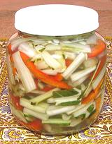

|
Chard Stems, PickledTurkey - Pasï Sapï Turshusu | ||||
| Makes: Effort: Sched: DoAhead: |
12 oz ** 12 days Must |
In Turkey and Lebanon, stuffed chard leaves are very popular, but that leaves a lot of stems. In Turkey, pickled chard stems are used as appetizers and in stir fries. | |||
|
----- 12 4 1 2 1/2 ----- 2 1/2 2 1 1 ----- |
--- oz oz cl t --- c c T T T --- |
-- Feature Chard Stems (1) Bell Pepper, red Chili, red (2) Garlic Salt -- Pickle Water Vinegar, (3) Salt Olive Oil ExtV Lemon Juice ----------- |
The photo example is a double recipe (1-1/2 pounds chard) in a half gallon jar. Make - (12 days - 20 min work)
|